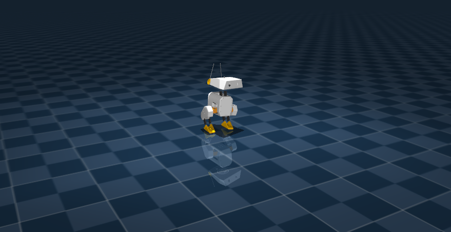

You're reading the documentation for an older, but still supported, version of ROS 2. For information on the latest version, please have a look at Lyrical.
ros2_control_demo_example_18


This demo runs a policy-driven Open Duck Mini v2 in MuJoCo, using ONNX inference for locomotion and streaming observations via state_interfaces_broadcaster.
You need: mujoco_ros2_control, the onnxruntime_vendor package (vendors ONNX Runtime for ROS 2), a trained ONNX model, and ROS 2 (tested on Jazzy).
Robot description
The demo uses URDF, MuJoCo XML models, and ros2_control configuration from description/.
The meshes come from Open_Duck_Mini.
The MuJoCo model (open_duck_mini_v2.xml, scene.xml) is adapted from Open_Duck_Playground with BAM-tuned actuator parameters.
A custom hardware interface adds foot contact detection via mjData->contact[].
See ros2_control_demo_description/openduckmini/README.md for sources, structure, and modifications.
Prerequisites
Dependencies
Install MuJoCo and onnxruntime_vendor packages from apt:
sudo apt update
sudo apt install ros-$ROS_DISTRO-mujoco-ros2-control ros-$ROS_DISTRO-mujoco-ros2-control-msgs ros-$ROS_DISTRO-onnxruntime-vendor
or simply
sudo apt update
cd ~/ros2_ws # where your ROS 2 workspace is located
rosdep install --from-paths src --ignore-src -r -y
Model and workspace
The ONNX model from model_path in bringup/config/open_duck_mini_controllers.yaml (Default: onnx_model/open_duck_mini_policy.onnx) will be used. There are several options:
onnx_model/open_duck_mini_policy.onnx: The bundled model was trained via Open_Duck_Playground for MuJoCo-to-MuJoCo+ros2_control transfer. we have validated the model trained in MuJoCo via Python reference (direct ONNX inference in MuJoCo) walks forward successfully.A custom policy. Place your ONNX model in
onnx_model/, then build and source your ROS 2 workspace before running.You can use a baseline model from Open_Duck_Mini (e.g.
BEST_WALK_ONNX_2.onnx).If you want to create your own: clone Open_Duck_Playground, run
uv run playground/open_duck_mini_v2/runner.py. Thepolicy_params_fninplayground/common/runner.pyexports ONNX at each checkpoint.
Build
Install the dependencies described above and source your ROS 2 underlay and workspace.
Build example_18:
cd ~/ros2_ws
colcon build --symlink-install --packages-select ros2_control_demo_description ros2_control_demo_example_18
source install/setup.bash
(Optional) Verify the URDF in RViz:
ros2 launch ros2_control_demo_example_18 view_robot.launch.py gui:=true
Run
ros2 launch ros2_control_demo_example_18 example_18_mujoco.launch.py
In another terminal (source your workspace first):
ros2 control list_controllers
python3 $(ros2 pkg prefix ros2_control_demo_example_18)/share/ros2_control_demo_example_18/launch/test_motions.py
The test script publishes VelocityCommandWithHead messages (base_velocity + neck_pitch, head_pitch, head_yaw, head_roll) to /onnx_policy_controller/cmd_velocity_with_head at 50 Hz. You should see the duck walk forward.
Timing: 0.002s sim timestep in scene.xml, 50 Hz controller. Each control update spans 10 simulation steps, matching the reference training setup.
Design overview
At a high level, the demo uses the following control structure.
Control pipeline: (1) Observation formatter — sensor data (IMU, joint states, velocity commands, foot contacts) into the model’s observation vector; (2) ONNX inference — policy outputs raw actions; (3) Action formatter — scale, clamp to joint limits, rate limit, then write to hardware.
Data flow: MuJoCo → hardware interface (joint states, IMU, contact sensors) → state_interfaces_broadcaster →
/state_interfaces_broadcaster/values→ OnnxPolicyController (subscribes and runs ONNX) → command interfaces → hardware → MuJoCo. User commands:/onnx_policy_controller/cmd_velocity_with_head(VelocityCommandWithHead:base_velocity+ head joint positions).Hardware:
DuckMiniMujocoSystemInterfaceadds foot contact detection viamjData->contact[]; sensors withmujoco_type="contact"exposecontact_raw. MuJoCo model uses BAM-tuned actuator parameters and built-in position actuators.Observation vector (matches training): gyro, accelerometer, velocity commands (7D), joint positions/velocities, last three actions, motor targets, feet contacts (2), imitation phase (cos/sin). Total size 17 + 6*N (N=14). Imitation phase must match training (e.g. period 27 steps).
ONNX integration
OnnxPolicyController uses ONNX Runtime (via the onnxruntime_vendor package) to turn the observation vector into joint commands. The observation (floats) is wrapped into an Ort::Value tensor and passed to the ONNX session, which returns an output tensor. The model outputs relative joint positions as floats; these are converted to doubles, then ActionProcessor scales them by action_scale (default 0.25), adds default joint positions, and sends the resulting absolute positions to the hardware. Default positions are taken from the first sensor read, or from default_joint_positions in the controller configuration.
Current Limitations
Occasionally, the robot may fall over. Further model fine-tuning or domain randomization can help improve robustness.